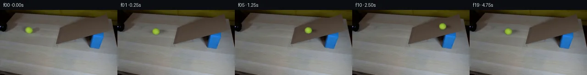
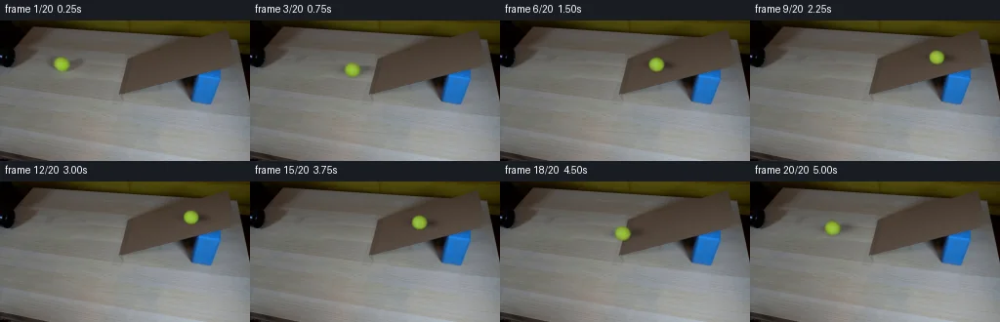
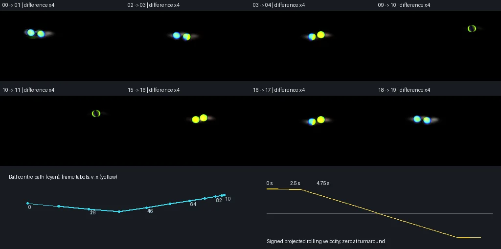

V0 · 初版 · 最终提交
![]()
Observable Generation Trace
把最终像素视频、Harness 冻结的每轮候选、真实工具事件和 Agent 自述放在同一页。可观测证据与模型自述分开标记，避免把“模型说它检查过”误当成真实工具调用。
![首帧]()
Static locked-off single-shot with fixed frame throughout filmed with constant framerate in real-time. The scene shows a realistic scientific demonstration. The scene only contains the described setup and actions. A simple ramp made of cardboard, propped up by a blue block on a light-colored wooden table. There's a black pipe to the left of the frame that directly points towards it. The yellow tennis ball rolls straight out of the black pipe onto the ramp.
首帧显示在左侧播放器初始画面。Track 权限、隔离和 tensor 一致性来自 run manifest，而不是 METHOD.md。
默认勾选初版和最终版；可选其他版本一起同步播放。仅检查图更新的连续重复快照已合并，回退旧视频仍保留为一次修订。
Observable events
来源：events.jsonl + run manifest
此 Track 禁止读取输出图片。逐轮预览由外部 Harness 自动冻结，只用于事后审计，生成 Agent 当时看不到这些页面。
Frozen candidates
每张图来自该 round 的真实 00 / 01 / 05 / 10 / 19 帧

pixels 207278f2d231a96c · code 3ac1fb4f9175f190
--- previous/generate.py
+++ current/generate.py
@@ -0,0 +1,315 @@
+"""PixelWorld continuation, using only the supplied photograph and local pixel math."""
+from pathlib import Path
+import json
+import math
+import numpy as np
+from PIL import Image, ImageDraw
+from scipy.ndimage import gaussian_filter, map_coordinates
+from scipy.optimize import least_squares
+from artifact_io import save
+
+ROOT = Path(__file__).resolve().parent
+SOURCE = np.asarray(Image.open(ROOT / 'first_frame.png').convert('RGB'))
+H, W = SOURCE.shape[:2]
+YY, XX = np.mgrid[:H, :W].astype(float)
+CX, CY = 62.8, 44.4
+RX, RY = 8.0, 7.2
+CONTACT0 = CY + RY
+FOOT_X, FOOT_Y = 125.2, 60.0
+TABLE_SLOPE = (FOOT_Y - CONTACT0) / (FOOT_X - CX)
+RAMP_SLOPE = (32.2 - 60.0) / (239.4 - 125.2)
+ENTRY = .75
+TURN = 2.5
+EXIT = 4.25
+TABLE_DRAG = 2.0
+V0 = ((FOOT_X-CX) + .5*TABLE_DRAG*ENTRY**2)/ENTRY
+V_ENTRY = V0 - TABLE_DRAG*ENTRY
+DECEL = V_ENTRY/(TURN-ENTRY)
+
+
+def smoothstep(a, b, x):
+ t = np.clip((x-a)/(b-a), 0, 1)
+ return t*t*(3-2*t)
+
+
+def reconstruct_table():
+ """Use clean same-row table samples, retaining sampled fine wood texture."""
+ src = SOURCE.astype(float)
+ left = src[:, 40:47].mean(axis=1)
+ right = src[:, 94:102].mean(axis=1)
+ blend = np.clip((XX-43.0)/(98.0-43.0), 0, 1)
+ estimate = left[:, None, :]*(1-blend[..., None]) + right[:, None, :]*blend[..., None]
+ # Detail comes from an undisturbed same-row strip; no external texture.
+ donor_x = np.clip(94 + (XX-44)*.52, 94, 121)
+ donor = np.stack([map_coordinates(src[..., c], [YY, donor_x], order=1,
+ mode='nearest') for c in range(3)], axis=-1)
+ detail = donor-gaussian_filter(donor, sigma=(.6, 1.4, 0))
+ estimate += .8*detail
+ q = np.sqrt(((XX-68)/25.5)**2 + ((YY-45.8)/12.2)**2)
+ repair = 1-smoothstep(.64, 1.03, q)
+ reflection_q = np.sqrt(((XX-66)/12.5)**2+((YY-53.5)/5.4)**2)
+ repair = np.maximum(repair, 1-smoothstep(.50, 1.0, reflection_q))
+ clean = src*(1-repair[..., None])+estimate*repair[..., None]
+ return np.clip(clean, 0, 255), repair
+
+
+CLEAN, REPAIR = reconstruct_table()
+
+
+def shadow_field(x, y, px, py, scale, ramp, params):
+ a, sx, sy, far, dx, dy, fsx, fsy, slope = params
+ # Shadow lies on the receiving plane. Its displaced end approaches the
+ # contact as the inclined cardboard approaches the light source.
+ offset_scale = 1-.26*ramp
+ u = (x-px)/scale
+ v = (y-py)/scale
+ close = a*np.exp(-.5*((u/sx)**2+((v+6.1-slope*u)/sy)**2))
+ uf = u-dx*offset_scale
+ vf = v-dy*offset_scale-slope*uf
+ far_shadow = far*np.exp(-.5*((uf/fsx)**2+(vf/fsy)**2))
+ contact = .12*np.exp(-.5*((u/3.8)**2+(v/1.3)**2))
+ return 1-(1-close)*(1-far_shadow)*(1-contact)
+
+
+# Fit shadow strength/shape to the only source image, outside the sphere.
+source_q = ((XX-CX)/RX)**2+((YY-CY)/RY)**2
+fit_region = (XX>44)&(XX<94)&(YY>33)&(YY<59)&(source_q>1.28)&(REPAIR>.1)
+observed_shadow = np.clip(1-SOURCE.astype(float).mean(-1)/np.maximum(CLEAN.mean(-1), 1), -.1, .6)
+initial_shadow = np.array([.17, 10.5, 4.6, .24, 13., -7.5, 8.8, 3.8, -.18])
+lo = [0.02, 7, 2.5, .10, 8, -10, 6, 2.5, -.45]
+hi = [.35, 15, 6, .40, 18, -4, 12, 5.5, .1]
+fit = least_squares(lambda p: (shadow_field(XX, YY, CX, CONTACT0, 1, 0, p)-observed_shadow)[fit_region],
+ initial_shadow, bounds=(lo, hi), max_nfev=160, loss='soft_l1', f_scale=.025)
+SHADOW_PARAMS = fit.x
+
+
+# Recover the photographed tennis felt, fitting camera-fixed smooth shading
+# separately from the material variation so the latter can rotate.
… diff truncated; 228 more lines …Final visual checks
Harness 保存的最终产物


Agent claims
以下文字由生成 Agent 撰写，不等同于工具证据
The supplied image is the sole visual reference. The frame is 256 × 144. The camera is fixed, looking down at a light wooden tabletop. A dark pipe enters from the upper left and has its visible mouth near (7, 36). A yellow-green tennis ball is already outside the mouth, centered approximately at (63, 44), with a radius of about 7 pixels. Its tabletop contact is near (63, 51). A soft shadow falls to the right of the ball.
The cardboard ramp occupies approximately the quadrilateral (122, 76), (130, 36), (234, 10), (243, 47). Its left edge rests on the table; the right end is raised by the visible blue block, approximately x=194–225, y=49–85. The ramp slopes upward toward the right and away from the camera. The tabletop, cardboard, support, pipe, and background must remain stationary. Existing shadows and natural texture should be retained.
The first frame already shows the ball in flight along its rolling path outside the pipe. Continue that observed state without restarting the action. The ball rolls rightward on the table to the lower edge of the ramp, rolls uphill along the middle of its surface, decelerates under gravity, turns around before the raised end, and rolls back onto the table. No hands or additional objects enter. The straight trajectory is represented on the tabletop and on the inclined plane by different projected slopes. Use a sphere radius near 7 pixels with a small perspective variation, a rotating faint tennis seam, and a contact shadow following the supporting surface.
Times are sampled at 4 fps; frame 00 is the exact supplied image. One displayed frame occupies 0.25 seconds, for a total playback length of 5 seconds.
| Frame | Time (s) | Intended event |
|---|---|---|
| 00 | 0.00 | Original ball centered near (63, 44), already beyond the pipe mouth. |
| 01 | 0.25 | Ball rolls farther right across the table. |
| 02 | 0.50 | Ball approaches the ramp foot. |
| 03 | 0.75 | Ball reaches the ramp foot and begins rolling onto cardboard. |
| 04 | 1.00 | Ball rolls uphill with a decreasing speed. |
| 05 | 1.25 | Ball continues uphill; shadow remains close to the cardboard. |
| 06 | 1.50 | Ball moves through the lower half of the ramp. |
| 07 | 1.75 | Ball approaches its highest point. |
| 08 | 2.00 | Ball slows further on the ramp. |
| 09 | 2.25 | Ball is near its turning point. |
| 10 | 2.50 | Ball reverses smoothly near the middle/upper part of the ramp. |
| 11 | 2.75 | Ball begins rolling downhill. |
| 12 | 3.00 | Ball gains downhill speed. |
| 13 | 3.25 | Ball descends through the ramp's middle. |
| 14 | 3.50 | Ball continues downhill. |
| 15 | 3.75 | Ball approaches the ramp foot. |
| 16 | 4.00 | Ball returns to the lower end of the ramp. |
| 17 | 4.25 | Ball rolls off onto the table. |
| 18 | 4.50 | Ball continues leftward across the table. |
| 19 | 4.75 | Ball rolls farther left, with no camera or setup movement. |
Use local Python pixel processing only. Remove the initial ball and its shadow with a small table-texture reconstruction. Composite an antialiased, textured, shaded sphere over the original static image. Compute motion on the table and ramp using a continuous position and velocity with constant uphill gravitational deceleration and modest rolling resistance. Render contact shadows on the supporting plane. Save the required packed uint32 tensor, individual PNGs, diagnostic sheets, and standalone HTML player. Inspect later outputs only with local code and numerical measurements; no later image Read/View tools or visual-review claim.
Source-only color segmentation measured the yellow-green ball over x=55–70, y=38–51, with a centroid of approximately (62.80, 44.51). The generation centre uses (62.8, 44.4) and radii (8.0, 7.2). The original object/shadow repair is confined to a feathered tabletop region whose nonzero bounding box is x=42–94, y=34–58. The lane meets the cardboard foot at (125.2, 60.0), continues toward (239.4, 32.2), and remains between the cardboard's visible edges.
The generated ball centre is (125.2, 52.8) at frame 03, (196.72, 35.87) at the frame 10 turnaround, (125.2, 52.8) at frame 17, and (84.22, 47.28) at frame 19. Numeric green-color detection follows every planned centre within 0.24 pixels. The reconstructed table contains no residual green ball-color pixels at the initial location under the diagnostic threshold. Rendering the fitted sphere at its original pose gives a core RGB reconstruction RMSE of approximately 1.83 levels out of 255. These measurements support keeping the generated sequence without a pixel revision.
All 20 PNGs and all 20 HTML playback frames exactly match the packed tensor; frame 00 exactly matches the source. Outside the union of the initial repair, ball, and shadow regions, 32,564 pixels remain identical in every frame. The later artifacts were inspected only by local code and numeric checks.
This is a local Python reconstruction and animation of the supplied photograph. It uses NumPy, Pillow, and SciPy pixel operations; it does not use a generative model, a rendering engine, network access, additional scene references, or agents. artifact_io.py only packages the generated pixels and supplies the standalone player.
Frame 00 is copied directly from first_frame.png, without modification. For subsequent frames, the initial tennis ball, its table shadow, and its faint green reflection are removed from a small, feathered region. The replacement estimates the same-row tabletop colors from clean samples to either side and adds fine wood texture sampled from an undisturbed strip of the same photograph. All other original scene pixels remain fixed except where the moving ball or its shadow passes over them.
The moving ball is an antialiased elliptical projection of a sphere, approximately 8.0 × 7.2 pixels in radius at its original location. A regularized fit to the initial ball's green channel provides camera-relative smooth shading. The original photograph's color residual supplies the felt texture and faint seam. This material residual rotates in sphere coordinates; the unseen hemisphere repeats the measured hemisphere. A very small deterministic surface variation supplements the sampled felt. This is a photographic pixel composite with approximate spherical shading, not a complete reconstruction of the unseen object.
Two fitted soft shadow components and a small contact component follow the ball's support point. The displaced shadow becomes shorter on the ramp. A faint local green reflection also follows the contact. Layers are computed at four times the output resolution, filtered, and averaged into the original 256 × 144 pixel grid. Three short exposure samples produce about 1/60 second of motion blur. The static background is not globally resampled.
The first ball centre is (62.8, 44.4). The ramp foot along the ball's lane is (125.2, 60.0) in contact-point coordinates, and the lane's raised endpoint is (239.4, 32.2). Table and ramp motion therefore have different screen slopes. The screen path follows a fixed lane across the cardboard rather than passing through its support.
The ball begins with a projected horizontal speed of 83.95 pixels/second. Small table drag brings it to the ramp at 0.75 seconds with a speed of 82.45 pixels/second. Constant projected gravitational deceleration of approximately 47.11 pixels/second² reverses the uphill roll at 2.50 seconds. It returns to the foot at 4.25 seconds and continues rolling left on the table. The turnaround is continuous in position and velocity. The ball does not reach the raised endpoint or hit the blue support. The sphere centre follows an approximate support-plane normal, with a short smooth transition at the foot. Perspective reduces its radius by about four percent near the turning point.
These are physically motivated projected dynamics, not a metric calibration of the real setup. No real-world scale, camera intrinsics, or actual friction coefficient can be recovered from the single input frame. The mathematical model uses constant ramp deceleration and modest table rolling resistance.
Running python generate.py writes:
pixels.npz: pixels, a uint32 tensor of shape (144, 256, 20), packed as 0xRRGGBB.frames/00.png through frames/19.png: 20 RGB frames at 256 × 144.inspection.png: an eight-frame contact sheet.transition_check.png: selected amplified pixel differences plus numeric trajectory and velocity plots.index.html: a self-contained interactive player at 4 fps, with a five-second playback loop.validation.json: format, equality, static-scene, trajectory, and ball-detection checks.The validation decodes every packed tensor frame and compares it exactly to its PNG, compares frame 00 exactly to the input, and independently decodes the HTML delta packets and checks them against the tensor. It also verifies that changes are restricted to the original repair and moving-object regions, checks the ball's detected color centroid against its planned location, checks the ramp contacts against its edges, checks zero velocity at the turnaround, and verifies that both diagnostic PNGs decode successfully.
The only visual observation was the initial image attached to the task. Later generated outputs were inspected solely through local Python calculations, numeric summaries, and file-format checks. No generated image was opened with an image Read/View tool, and no visual review of the generated animation is claimed.